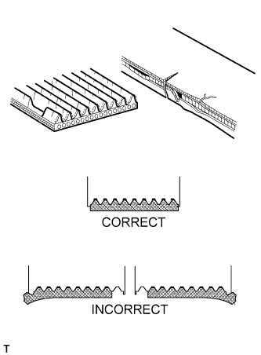
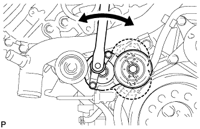

DRIVE BELT > ON-VEHICLE INSPECTION |
| 1. INSPECT V-RIBBED BELT |
 |
Check the belt for wear, cracks or other signs of damage.
If any of the following defects is found, replace the V-ribbed belt.
Check that the belt fits properly in the ribbed grooves.
| 2. INSPECT V-RIBBED BELT TENSION (w/ Viscous Heater) |
 |
Using a belt tension gauge, inspect the belt tension.
| Item | Specified Condition |
| New belt | 400 to 650 N (41 to 66 kgf, 89.9 to 146.1 lbf) |
| Used belt | 300 to 500 N (31 to 51 kgf, 67.4 to 112.4 lbf) |
| 3. INSPECT V-RIBBED BELT TENSIONER ASSEMBLY |
 |
Check that nothing gets caught in the tensioner by turning it clockwise and counterclockwise.
If a malfunction exists, replace the tensioner.